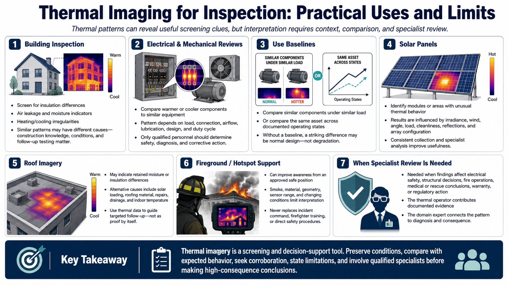

Thermal Imaging for Inspection and Safety
Connecting to LMS... Progress: in progress

Narration
Building inspection can use thermal patterns to screen for insulation differences, air leakage, moisture indicators, or heating and cooling irregularities. Similar patterns may have different causes, so construction knowledge, environmental conditions, and additional testing are essential.
Electrical and mechanical reviews may reveal components that appear warmer or cooler than comparable equipment. Load, connection, airflow, lubrication, design, and duty cycle affect the pattern. Only qualified personnel should determine safety, diagnosis, and corrective action.
Baselines strengthen inspection. Compare similar components under similar load, or compare the same asset across documented operating states. Without a baseline, a visually striking difference may represent normal design rather than degradation.
Solar-panel inspection can identify modules or areas with unusual thermal behavior, but irradiance, wind, angle, load, cleanliness, reflections, and array configuration influence results. Consistent collection and specialist analysis improve usefulness.
Roof imagery may show thermal patterns associated with retained moisture or insulation differences. Solar loading, roofing material, repairs, drainage, and indoor temperature can create alternatives. Thermal data should guide targeted follow-up, not serve as proof by itself.
Fireground or hotspot support can improve awareness from an approved safe position, but smoke, material, geometry, sensor range, and changing conditions limit interpretation. Thermal imagery never replaces incident command, firefighter training, or direct safety procedures.
Specialist review is needed when findings affect electrical safety, structural decisions, fire operations, medical or rescue conclusions, warranty, or regulatory action. The thermal operator contributes documented evidence; the domain expert connects it to diagnosis and consequence.